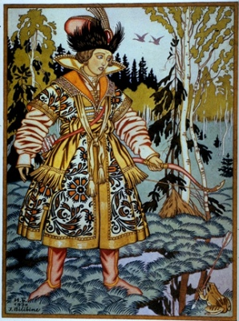

Sacred Texts Legends and Sagas
Buy this Book on Kindle
|  | Folk Tales From the Russianby Verra Xenophontovna Kalamatiano de Blumenthal[1903] |
Title Page and Contents
Foreword
A List of Illustrations
Dedication
Notes
The Tsarevna Frog
Seven Simeons
The Language of the Birds
Ivanoushka the Simpleton
Woe Bogotir
Baba Yaga
Dimian the Peasant
The Golden Mountain
Father Frost